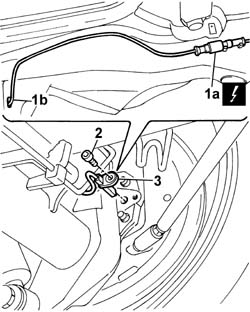

3340A34 rpm sensor (one) of one l/h or r/h rear wheel - r+r
- Path
- Procedures > 33 BRAKES > 3340 A(B.S. ANTI-LOCK BRAKING SYSTEM .) > 3340A abs check/adjustment devices > 3340A34 rpm sensor (one) of one l/h or r/h rear wheel - r+r
- Kind
- repair procedure (removal / refitting; the operation number is the code)
- Applies to
- all engines; all production periods
- Interactive page
- https://sloeber94.github.io/elrnDB-fDbl/en/#/2584686
Applies to: all engines; all production periods
 Removing
Removing
 Refitting
RefittingPlace the car on a lift.
Disconnect the battery negative terminal lead.
Op. 7040L44 REAR DOOR HOUSING RUNNING BOARD (ONE), LEFT OR RIGHT - R.R..
Op. 7040L62 RUNNING BOARD SUPPORT FOR (ONE) REAR DOOR HOUSING, LEFT OR RIGHT - R.R..
1. Slightly raise the rear floor trim and disconnect electrical connection (1a) of the ABS wheel sensor, then pass the wiring through hole (1b) on the body.
Name | Connector | |
|---|---|---|
1 | Left rear wheel sensor for ABS |
Name | Connector | |
|---|---|---|
1 | Right rear wheel sensor for ABS |
2. Working from the lower side of the car, unscrew the rear rpm sensor bolt.
3. Release the wiring from the retaining bracket on the body and remove the rear rpm sensor.

Applies to: all engines; all production periods
Refitting
RemovingFit the wheel rpm sensor, positioning the wiring correctly on the bracket.
Pass the wiring inside the car and connect the electrical connector.
 | Name | Connector |
|---|---|---|
- | Left rear wheel sensor for ABS |
| Name | Connector |
|---|---|---|
- | Right rear wheel sensor for ABS |
Screw in the rpm sensor bolt.
 | Fastening | Component | Ø | Value (daNm) |
|---|---|---|---|---|
- | Bolt | ABS REAR WHEEL RPM SENSOR | M6 | 0.7 |
Reslace the rear floor covering.
Op. 7040L62 RUNNING BOARD SUPPORT FOR (ONE) REAR DOOR HOUSING, LEFT OR RIGHT - R.R..
Op. 7040L44 REAR DOOR HOUSING RUNNING BOARD (ONE), LEFT OR RIGHT - R.R..
Connect the battery negative terminal lead.
Remove the car from the lift.
Topics linked from this page (4)
- 7040L44 rear compartment scuff strip - r r
- 7040L62 sill plate support for one rear door compartment one lh or rh r r
- K75 LEFT REAR WHEEL SENSOR FOR ABS ( FRONT )
- K76 RIGHT REAR WHEEL SENSOR FOR ABS ( FRONT )